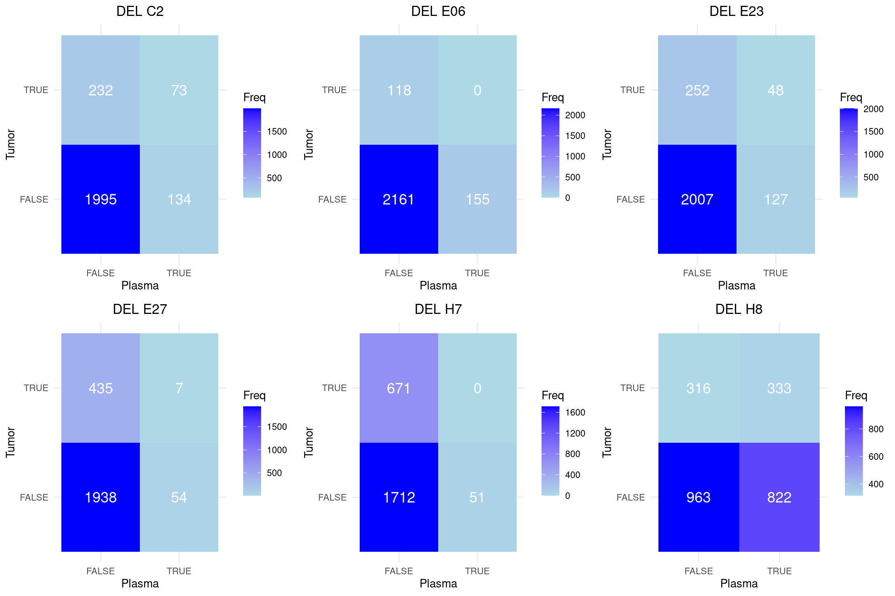
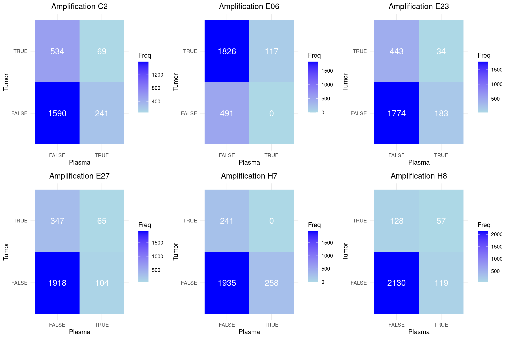
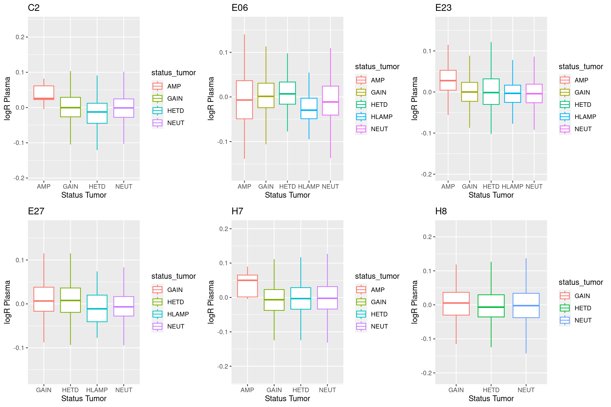

Last updated: 2025-01-02
Checks: 6 1
Knit directory:
liquid_biopsy_project/analysis/
This reproducible R Markdown analysis was created with workflowr (version 1.7.1). The Checks tab describes the reproducibility checks that were applied when the results were created. The Past versions tab lists the development history.
Great! Since the R Markdown file has been committed to the Git repository, you know the exact version of the code that produced these results.
Great job! The global environment was empty. Objects defined in the global environment can affect the analysis in your R Markdown file in unknown ways. For reproduciblity it’s best to always run the code in an empty environment.
The command set.seed(12345) was run prior to running the
code in the R Markdown file. Setting a seed ensures that any results
that rely on randomness, e.g. subsampling or permutations, are
reproducible.
Great job! Recording the operating system, R version, and package versions is critical for reproducibility.
Nice! There were no cached chunks for this analysis, so you can be confident that you successfully produced the results during this run.
Using absolute paths to the files within your workflowr project makes it difficult for you and others to run your code on a different machine. Change the absolute path(s) below to the suggested relative path(s) to make your code more reproducible.
| absolute | relative |
|---|---|
| /hpcnfs/scratch/DIMA/zhan/gpelicci/liquid_biopsy_project/results/cna/ | ../results/cna |
Great! You are using Git for version control. Tracking code development and connecting the code version to the results is critical for reproducibility.
The results in this page were generated with repository version 72ee1f3. See the Past versions tab to see a history of the changes made to the R Markdown and HTML files.
Note that you need to be careful to ensure that all relevant files for
the analysis have been committed to Git prior to generating the results
(you can use wflow_publish or
wflow_git_commit). workflowr only checks the R Markdown
file, but you know if there are other scripts or data files that it
depends on. Below is the status of the Git repository when the results
were generated:
Ignored files:
Ignored: .Rproj.user/
Untracked files:
Untracked: .gitignore
Untracked: liquid_biopsy_project.Rproj
Note that any generated files, e.g. HTML, png, CSS, etc., are not included in this status report because it is ok for generated content to have uncommitted changes.
These are the previous versions of the repository in which changes were
made to the R Markdown
(analysis/00_exploratory_analysis.Rmd) and HTML
(docs/00_exploratory_analysis.html) files. If you’ve
configured a remote Git repository (see ?wflow_git_remote),
click on the hyperlinks in the table below to view the files as they
were in that past version.
| File | Version | Author | Date | Message |
|---|---|---|---|---|
| Rmd | 72ee1f3 | Yinxiu Zhan | 2025-01-02 | Add exploratory analysis |
In this report, we aim to evaluate the feasibility and confidence of CNV detection in plasma samples (vesicles) compared to tumor tissue samples using low-pass whole-genome sequencing (WGS). The low-pass WGS data were analyzed with ichorCNA, employing a 1 Mb bin size to estimate tumor fraction and identify copy number variations.
We start by comparing the deletion and amplification detected in tumor and plasma samples. At this stage, we use all the CNVs.
Below, we present a comparison between plasma and tumor WGS low-pass data in detecting deletions, represented using confusion matrices.
A confusion matrix is a summary of classification outcomes, showing how well predictions align with the actual values. It consists of four components:
In this analysis:
TRUE indicates the presence of a deletion. FALSE indicates the absence of a deletion.
As evident from the matrices, there is minimal overlap between deletions detected in plasma and those detected in tumor samples. This highlights the challenge of achieving concordant results between these two sample types, particularly in low-pass WGS data.

In this analysis:
TRUE indicates the presence of a amplification higher or equal than 3 copies FALSE indicates the absence of a amplification.
As evident from the matrices, there is little overlap between amplifications detected in plasma and those detected in tumor samples. This highlights the challenge of achieving concordant results between these two sample types, particularly in low-pass WGS data.

Next, we examined how the log ratio of copy number in each bin varies between plasma and tumor samples, stratifying the analysis based on tumor sample categories: gain, neutral, and loss of copy number. At a resolution of 1 Mb, we observed a general tendency for copy number ratios to be preserved between plasma and tumor samples. Regions with copy number gains consistently exhibited higher log ratios compared to neutral or deleted regions. However, given the low tumor fraction (<10%) and sequencing depth, detecting CNAs at a 1 Mb resolution may exceed the limits of reliable detection. To address this, we will repeat the analysis using a coarser resolution of 10 Mb.

R version 4.3.1 (2023-06-16)
Platform: x86_64-pc-linux-gnu (64-bit)
Running under: Ubuntu 22.04.3 LTS
Matrix products: default
BLAS: /usr/lib/x86_64-linux-gnu/openblas-pthread/libblas.so.3
LAPACK: /usr/lib/x86_64-linux-gnu/openblas-pthread/libopenblasp-r0.3.20.so; LAPACK version 3.10.0
locale:
[1] LC_CTYPE=en_US.UTF-8 LC_NUMERIC=C
[3] LC_TIME=en_US.UTF-8 LC_COLLATE=en_US.UTF-8
[5] LC_MONETARY=en_US.UTF-8 LC_MESSAGES=en_US.UTF-8
[7] LC_PAPER=en_US.UTF-8 LC_NAME=C
[9] LC_ADDRESS=C LC_TELEPHONE=C
[11] LC_MEASUREMENT=en_US.UTF-8 LC_IDENTIFICATION=C
time zone: Etc/UTC
tzcode source: system (glibc)
attached base packages:
[1] stats graphics grDevices utils datasets methods base
other attached packages:
[1] gridExtra_2.3 stringr_1.5.0 stringi_1.7.12 caret_6.0-94 lattice_0.21-8
[6] ggplot2_3.4.2
loaded via a namespace (and not attached):
[1] tidyselect_1.2.0 timeDate_4022.108 dplyr_1.1.3
[4] farver_2.1.1 fastmap_1.1.1 pROC_1.18.4
[7] promises_1.2.1 digest_0.6.33 rpart_4.1.19
[10] timechange_0.2.0 lifecycle_1.0.3 survival_3.5-5
[13] magrittr_2.0.3 compiler_4.3.1 rlang_1.1.1
[16] sass_0.4.7 tools_4.3.1 utf8_1.2.3
[19] yaml_2.3.7 data.table_1.14.8 knitr_1.44
[22] labeling_0.4.3 plyr_1.8.8 workflowr_1.7.1
[25] withr_2.5.0 purrr_1.0.2 nnet_7.3-19
[28] grid_4.3.1 stats4_4.3.1 fansi_1.0.4
[31] git2r_0.32.0 colorspace_2.1-0 future_1.33.0
[34] globals_0.16.2 scales_1.2.1 iterators_1.0.14
[37] MASS_7.3-60 cli_3.6.1 rmarkdown_2.24
[40] generics_0.1.3 rstudioapi_0.15.0 future.apply_1.11.0
[43] reshape2_1.4.4 cachem_1.0.8 splines_4.3.1
[46] parallel_4.3.1 vctrs_0.6.3 hardhat_1.3.0
[49] Matrix_1.5-3 jsonlite_1.8.7 listenv_0.9.0
[52] foreach_1.5.2 gower_1.0.1 jquerylib_0.1.4
[55] recipes_1.0.8 glue_1.6.2 parallelly_1.36.0
[58] codetools_0.2-19 lubridate_1.9.2 gtable_0.3.4
[61] later_1.3.1 munsell_0.5.0 tibble_3.2.1
[64] pillar_1.9.0 htmltools_0.5.6 ipred_0.9-14
[67] lava_1.7.2.1 R6_2.5.1 rprojroot_2.0.3
[70] evaluate_0.21 highr_0.10 httpuv_1.6.11
[73] bslib_0.5.1 class_7.3-22 Rcpp_1.0.11
[76] nlme_3.1-162 prodlim_2023.08.28 whisker_0.4.1
[79] xfun_0.40 fs_1.6.3 pkgconfig_2.0.3
[82] ModelMetrics_1.2.2.2